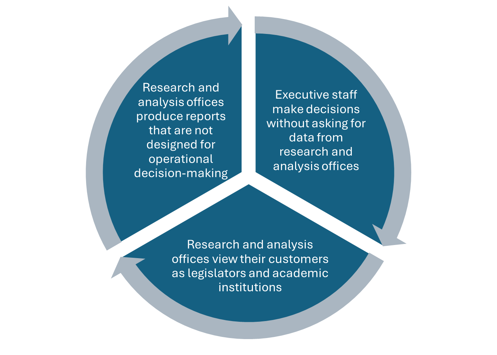

Lesson 4: Making Data Work for Your Executive Team
Introduction
Maybe you’re lucky enough to lead a corrections department in which your executive team regularly uses data to make decisions, and this data is produced by a research and analysis office dedicated to high-quality yet easy-to-understand analyses. Or maybe you don’t work in such an environment. Either way, to be a data-driven leader, you need to build and support a data-driven team that fosters collaboration between decision-makers and research and analysis staff.
A data-driven organization has two main components:
- A group of people dedicated to producing the highest-quality data that yield actionable insights (“supply side” of data)
- A group of people intent on using data as part of their jobs who ask for analyses and persistently refine their questions until they’re confident they have the best insights their team can deliver (“demand side” of data)

Having good research and analysis offices and good leaders who use them can be a chicken-and-egg situation. Without a steady supply of good data, leaders begin to look elsewhere to answer their questions. Without demand for data, research and analysis offices begin to think their mandate does not include directly serving operations staff. Instead, they focus on legislative reports, information requests, and academic research projects proposed by universities. That’s not to say these aren’t important tasks, but the priority for these offices should be helping corrections leaders. Further, sometimes case management system vendors offer customized reports for a cost, which may confuse matters when requesting data or asking your research and analysis office to help with operational reports. Depending on your department’s unique situation, you might want to focus more on the “supply side” or “demand side” of the equation.
The importance of data for decision-making
Chances are, your executive team includes people with a range of comfort levels when it comes to data—some fluent, others less so, and many in between. And in corrections, there are valid reasons data can be challenging. Still, it’s important for leaders to be curious about their own data—not just to validate their assumptions or confirm a narrative, but to strengthen operations, drive decision-making, and build a healthier data environment across the agency. Curiosity grounded in a desire to improve, rather than to avoid, ignore, or fear what the data might show, is what leads to meaningful progress. Below are some reasons leaders don’t use data. The next two sections suggest ways to fix that.
Demand side: Address with your executive team
You’re worried about what the data is going to tell you.
It’s hard to understand the data.
You have your executive assistant use Excel spreadsheets to generate the data you need to answer crucial questions, so you don’t need a whole data team.
Supply side: Address with your data team
The data that comes from corrections operations isn’t always in the best shape for analysis—it fills an operational or legal need but not an analytical one.
A research office that has been focusing on legislative reports or external requests might not be fluent enough in operations to produce an analysis that is usable for operations staff.
The first three reasons leaders don’t use data can be addressed with good professional development and coaching. These are addressed directly below. We’ll address reasons 4 and 5 later in this lesson.
Addressing data “demand side” issues
Strategy 1: Host “discovery” sessions
Invite executive staff to demonstrate their tracking systems and reports that they use regularly. This should help everyone understand that your true goal is data-driven decision-making, and you value what your staff has already done. This should provide inspiration and demonstrate what is currently happening in the department. These efforts might be built “outside” of the research and analysis office. This is not ideal in the long run, but it’s okay for now because it will show everyone what kinds of data and reports are useful. In addition, it will showcase what your real goal is: to use data to drive decisions.
Strategy 2: Document innovative approaches to data-driven decision-making
Almost every agency or department has someone who is the resident Excel or pivot table expert. There is also usually a warden or parole director who regularly uses data no matter how it’s produced. Make sure that their ideas, their way of working with data, and their expertise are leveraged in conversations. The leaders who are using data, and the people who are supplying it in a way that the organization deems useful, will be great experts and boosters in the effort to get your executive team to use data.
Strategy 3: Model using data for your team and set expectations about data-driven decisions
Using data analyses should be a routine part of your executive team’s day-to-day work. If you model using data regularly and act as if making analytic requests is the norm rather than the exception, others who are less comfortable with data will see how it can help them, too. Additionally, when discussing next steps or a new decision, always ask the team what data they’ve used to inform their plans. This way, data use becomes a routine part of how people approach decision-making.
Strategy 4: Ask leaders to identify their own KPIs
You should ask the whole executive team to help develop department-wide key performance indicators (KPIs). Start by asking them to identify outcomes metrics on a key proposal or priority of theirs. Ask them to work with either someone from the research and analysis office or someone who is considered a “data person” to figure out what data are available. This informal coaching is the best kind of professional development.
Strategy 5: Promote continuing education
This course is designed to help leaders get up to speed on data, and there are a number of other courses available that do the same. We hope this one is corrections-specific enough to be invaluable for your entire executive team, but if you’ve identified a specific data literacy need, there is probably a course out there for you and your team.
Addressing data “supply side” issues
As mentioned above, one of the reasons your executive team may not be using data and analysis from your research and analysis office is because they’re worried about the accuracy of the data—not just whether it’s correct, but also whether it helps them answer their operational questions. Your research and analysis office should be producing at least some business intelligence—information that helps you make informed decisions about key operational practices. If they aren’t, or if what they’re doing does not assist your executive team, here are a few strategies for improving the “supply side” of data-driven decision-making:
Strategy 1: Make the mandate clear
Previous leaders might not have wanted to use the research and analysis office in this way, but you do. In corrections, leaders make progress by ensuring their staff know that they’re serious about the direction they want to go. If this is a new mandate for the research and analysis office, be clear and persistent about it.
Strategy 2: Include the research and analysis unit in leadership discussions
If you decide to host a discovery session, include research and analysis staff. Have them listen carefully to what data leaders are using and why. You can also “detail” research analysts to different executive leaders and ask them to work together on key projects or help define KPIs. This will help the research and analysis office understand its “customers” better. Encourage your leaders to engage with analysts when they don’t understand an analysis or when findings are surprising. This helps develop your analysts’ skills.
Strategy 3: Support your research and analysis staff
Ask your research director what they’re doing to support their staff. Analysts often leave state agencies for higher-paying private sector jobs. While you may not be able to match private sector salaries, you can offer training opportunities, pay for certifications, provide tuition reimbursement, send staff to conferences, and create mentorship programs. Encourage your research director to use the core competencies outlined in the Hiring Guide to benchmark their staff skills and help them grow professionally.
Strategy 4: Invest in your data environment
Research and analysis offices need to invest in data quality, which sometimes means acquiring new databases, warehouses, or even analytical software (though some software is free, and the Advancing Data in Corrections Academy offers classes on that). It’s difficult to prioritize these things in your budget compared to other corrections line items, but it can be done. In addition, research and analysis offices often need intra-state or intra-agency support to get IT to make necessary changes to improve data quality. Helping your research and analysis offices work productively with IT, and letting IT know that this is your priority, is something that won’t cost you money but can get you great results.
Celebrating the wins
Data-driven decision-making in corrections is an ongoing process—because the field is so complex and generates so much data, this work is never truly finished. But as momentum builds, share success stories to demonstrate how your executive team and your research and analysis unit were able to do the following:
- Solve immediate problems (like analyzing violent incidents).
- Support strategic priorities (like reducing recidivism).
- Improve efficiency (like automating routine reports).
- Demonstrate program effectiveness (like showing treatment outcomes).